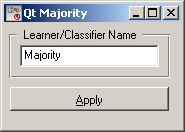
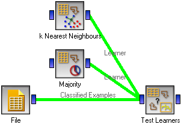

This is documentation for Orange 2.7. For the latest documentation, see Orange 3.
Majority Learner¶
A Learner that returns the majority class, disregarding the example’s attributes.
Signals¶
Inputs:
- Examples (ExampleTable)
A table with training examples
Outputs:
- Learner
The “learning” algorithm.
- Classifier
The classifier
Signal Classifier sends data only if the learning data (signal Examples) is present.
Description¶
This widget provides a graphical interface to a learner which produces a classifier that always predicts the majority class. When asked for probabilities, it will return the relative frequencies of the classes in the training set. When there are two or more majority classes, the classifier chooses the predicted class randomly, but always returns the same class for a particular example.
The widget is typically used to compare other learning algorithms with the default classification accuracy.
As all other widgets for classification, this one provides a learner and classifier, the former can be fed into widgets for testing learners, while the classifier itself is, well, not very useful.
The only option is the name under which it will appear in, say, Test Learners. The default name is “Majority”. When you change it, you need to click Apply.
Examples¶
In a typical use of this widget, it would be connected to Test Learners to compare the scores of other learning algorithms (such as kNN, in this schema) with the default scores.
